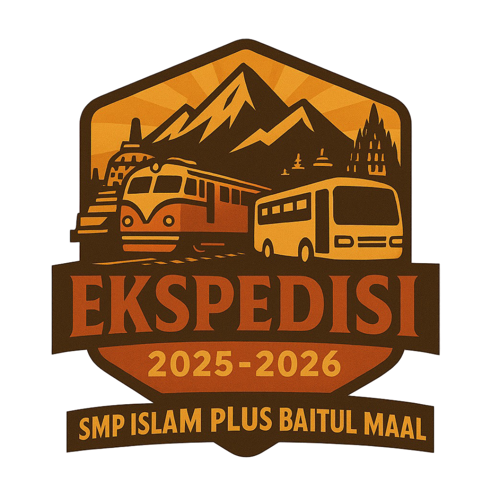

EKspedisi RT 4
Menjelajah, Mengabdi, Menginspirasi
Selamat datang di website resmi Ekspedisi RT 4. Kami adalah siswa SMP Islam Plus Baitul Maal yang berdedikasi untuk melakukan perjalanan edukatif sekaligus pengabdian masyarakat di Desa Pujon Lor, Malang.
Rencana Kegiatan Ekspedisi
Klik pada setiap tanggal di linimasa di bawah untuk melihat detail aktivitasnya.
Hari Keberangkatan
Pelepasan & Keberangkatan
- Pelepasan Ekspedisi dan keberangkatan dari Stasiun Senen menuju Malang Kota.
Tiba di Malang
Eksplorasi & Pembukaan
- Tiba di Stasiun Malang.
- Eksplorasi Kampung Warna Warni & Tridi.
- Eksplorasi Museum Brawijaya.
- Pembukaan di Balai Desa.
- Pengenalan lokasi & sapa masyarakat.
- Games & Edukasi anak-anak TPA.
- Diskusi & Refleksi Kelompok.
Hari Pengabdian
Penyuluhan & Interaksi
- Penyuluhan "7+1 Kebiasaan Anak Indonesia Hebat".
- Observasi & sharing profesi community.
- Kelas Inspirasi Desa: kerajinan tangan gantungan kunci bersama anak-anak.
- Games & Edukasi anak-anak SD.
- BPJS (Bersih-bersih perkampungan jadi sehat).
- Diskusi & Refleksi Kelompok.
Penutupan & Kepulangan
Eksplorasi & Perjalanan Pulang
- Closing.
- Eksplorasi Perkebunan Apel.
- Zoologi Frater Vianney & Museum Angkut Malang.
- Perjalanan pulang ke Jakarta (Stasiun Malang – Senen).
Tiba di Rumah
Tiba di Tangerang Selatan
- Tiba di SMP Islam Plus Baitul Maal...
Profil Anggota RT 4
Klik kartu untuk melihat detail anggota

Ahmad Luthfi Firdaus S.Pd

Ridza Kholdun

M Rayhan Arrasyid S

Fadlan Ali Ibadurrahman

Fattih Daris Alvino

Nadhif Zaidan Fayyadh

M Fathi Sabilul M

Muhammad Hamzah Azmi
Muhammad Hisyam An’nafi

Banu Mibras Naufal
Wawasan & Sejarah Lokasi Kunjungan
Memahami latar belakang tempat yang kami kunjungi adalah bagian penting dari ekspedisi ini.

Museum Angkut
Museum Angkut merupakan museum transportasi yang terletak di Kota Batu, Jawa Timur, dan dikelola oleh Jawa Timur Park Group. Museum ini resmi dibuka pada 9 Maret 2014 dan merupakan museum transportasi pertama di Asia Tenggara. Koleksinya mencakup lebih dari 300 jenis angkutan tradisional hingga modern dari berbagai negara, ditata dalam zona-zona tematik seperti Sunda Kelapa & Batavia, Eropa, Hollywood, hingga Gangster Town. Tujuannya adalah memberikan edukasi tentang sejarah dan perkembangan transportasi dunia secara menarik.

Kampung Wisata Jodipan (Kampung Warna-Warni)
Dulunya adalah kawasan pemukiman kumuh bernama Jodipan di tepi Sungai Brantas. Perubahan besar terjadi pada tahun 2016 berkat ide delapan mahasiswa Ilmu Komunikasi UMM dalam tugas praktikum Public Relations. Mereka menggandeng perusahaan cat Decofresh dalam program CSR untuk mengecat 107 rumah warga dengan warna-warna cerah. Keberhasilan ini menjadikannya "Kampung Warna-Warni" pertama di Indonesia dan menginspirasi pengembangan kampung sebelahnya menjadi Kampung Tridi (3D).

Museum Brawijaya
Museum sejarah militer yang terletak di Jalan Ijen, Kota Malang. Didirikan atas prakarsa Brigjen TNI (Purn) Soerachman pada tahun 1962 dan diresmikan pada 4 Mei 1968. Museum ini memamerkan benda bersejarah dari masa perjuangan kemerdekaan (1945-1949), khususnya peran Kodam V/Brawijaya. Koleksi paling ikoniknya adalah "Gerbong Maut", yang membawa tawanan Indonesia dari Bondowoso ke Surabaya dalam kondisi tidak manusiawi, menyebabkan banyak korban jiwa.

Desa Pujon Lor
Terletak di Kecamatan Pujon, Kabupaten Malang, desa ini memiliki sejarah yang kaya. Awalnya berupa hutan belantara, kemudian dibuka oleh Ki Ageng Selo, seorang pengembara sakti yang membawa kehidupan baru. Nama "Pujon" berasal dari kata "pinujian" (terpuji). Pada masa kolonial Belanda, Pujon menjadi pusat kawedanan. Desa Pujon Lor kini dikenal dengan potensi agrowisata dan peternakannya, mencerminkan perkembangan dari masa ke masa.